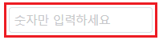
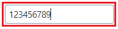
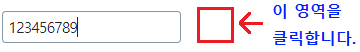
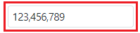
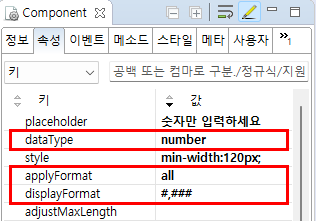

[Input] 숫자형 데이터 입력 시 설정한 포맷 적용 시점 지정하기 - applyFormat 동작 비교
1개요
Input의 'applyFormat' 속성을 사용하여, 숫자형 데이터가 입력될 때, 포맷을 적용하는 시점을 설정한 예제입니다.
'applyFormat' 속성을 'display'로 설정하면 입력 커서가 컴포넌트를 벗어날 때 포맷이 적용되고, 속성을 'all'로 설정하면 값이 입력될 때 마다 포맷이 적용됩니다.
'applyFormat' 속성이 'all'로 설정되면, 포맷이 적용된 문자열이 컴포넌트의 값으로 적용됩니다.
2구현된 기능
입력 커서가 컴포넌트를 벗어나면 포맷이 적용 - applyFormat : display
입력 즉시 포맷이 적용 - applyFormat : all
3예제 테스트 방법
3.1입력 커서가 컴포넌트를 벗어나면 포맷이 적용 - applyFormat : display
예제 영역 '기본 설정 - applyFormat : display'에서 테스트합니다.1
STEP 1: 숫자형 데이터를 입력합니다.
Input에 "123456789"를 입력합니다.
Image 1.브라우저(Chrome) 실행 예시

2
STEP 2: 실행 결과를 확인합니다.
포맷이 입력 중에는 적용이 되지 않는 것을 확인 할 수 있습니다.
Image 2.브라우저(Chrome) 실행 예시

3
STEP 3: 컴포넌트의 외부 영역을 클릭하여 커서를 제거합니다.
Image 3.브라우저(Chrome) 실행 예시

4
STEP 4: 실행 결과를 확인합니다.
포맷이 적용되는 것을 확인합니다.
Image 4.브라우저(Chrome) 실행 예시

3.2입력 즉시 포맷이 적용 - applyFormat : all
예제 영역 'applyFormat : all'에 구성된 GridView에서 테스트합니다.1
STEP 1: 숫자형 데이터를 입력합니다.
Input에 "123456789"를 입력합니다.
Image 5.브라우저(Chrome) 실행 예시
2
STEP 2: 실행 결과를 확인합니다.
포맷이 입력 즉시 적용되는 것을 확인 할 수 있습니다.
Image 6.브라우저(Chrome) 실행 예시

4구현 예시
4.1입력 즉시 포맷이 적용 - applyFormat : all
1
Input의 속성을 정의합니다.
[필수] dataType="number"
입력 데이터 타입. number 또는 bigDecimal로 설정합니다.
[필수] displayFormat="#,###"
입력 데이터에 적용할 포맷을 지정합니다.
[필수] applyFormat="all"
[default:display, all] formated 된 value의 값의 적용 범위로 all의 경우, value와 display된 값이 동일하게 적용되며 입력하는 동안에 format이 적용된다.
Image 7.웹스퀘어 스튜디오의 Component View - 속성 설정 예시

Example 1.Source
<!-- input 의 소스 본문 예시 --> <xf:input dataType="number" displayFormat="#,###" applyFormat="all"> </xf:input>
5주요 API
dataType
displayFormat
applyFormat